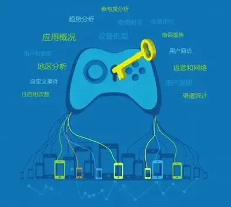
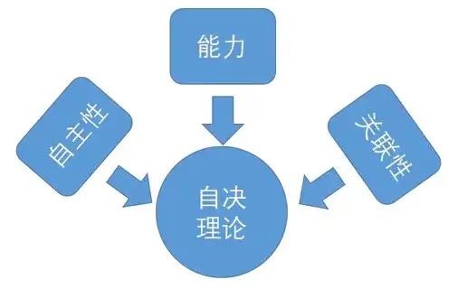
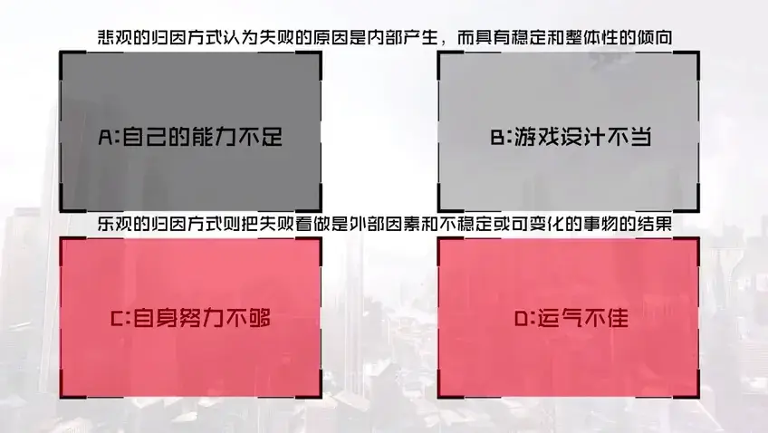
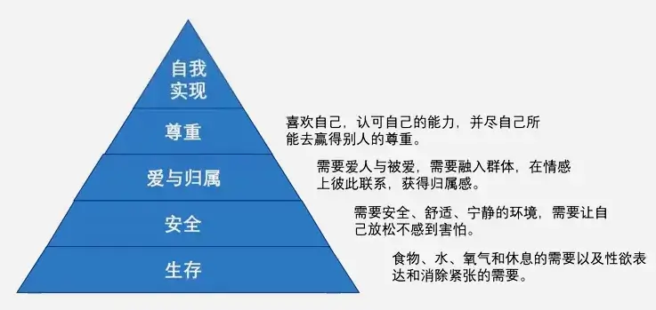
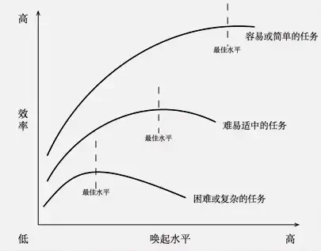

第三章 有黏性的学习
3-1 游戏黏性
同学们大家好，欢迎大家回到游戏心理学的慕课。
从这节课开始，咱们再开始一个新的章节。
在谈论游戏的时候，咱们会说到一个词：游戏黏性。“黏”的本意是说相互附着、连接在一起的状态，游戏粘性很形象地描述了游戏的一种特性，那就是游戏能够吸引玩家反复投身游戏，长时间滞留于游戏，始终不愿意离开。更具体来说，对于黏性好的游戏，玩家是不会轻易离开游戏、淡忘游戏或删除游戏的。

在当下这个大数据时代，各个游戏公司对于游戏运营数据的分析越来越重视， 用户留存、DAU、MAU 等参数已经成为运营人员每天要考察的指标，用户留存一直都是用来评定用户粘度的最好指标。玩家自某段时期开始玩这个游戏，在一段时间之后，仍然还在玩，就可以被认做是留存；这部分用户占当时新增用户的比例，即是留存率。

在对用户黏性的研究中，有一种观点认为游戏的主要激励点在于玩家在游戏过程中能够体验到自主性、能力和关联性，这是产生内在动机的 3 个基本心理学需求。这个理论被称为“自决理论”。
在这里，**自主是指玩家做出的选择及其原因。**当玩家选择出于自身兴趣或个人价值而不是奖励或被迫做出某种行动时，感知到的就是很高的自主性。比如玩家可以自由选择做出动作的顺序，没有被迫采取某种特别的发展方式，那么自主感就会很高。
**能力是指最优化挑战人们的能力，**在游戏中，如果控制方法简单直观，游戏中的任务会持续不断地提供最优化挑战和积极反馈，那么玩家的能力感就会很高。
**关联性指人们与他人的联系。**在游戏中，他人可能是电脑生成的人或其他玩家。互动、联系和照顾他人的体验需求能够成为强大的动机。如果能够考虑到这 3 个元素，而不是简单地通过奖励进行激励，那么玩家或许会更大程度地参与到非游戏内容中。
再深究的话，我们还是要问：究竟是什么促使我们产生了玩游戏的念头？想要放松一下？想要发泄一下？答案可能各有不同，但我们会发现，在游戏领域我们仍然遵守着基本的心理学规律，即不存在毫无理由的行为。我们首先为了满足某种需求匮乏，而产生了相应的动机，进而开始游戏行为。在游戏中我们通过感觉和认知得到了满足，又产生了希望延续愉悦感的持续动机，“引诱”我们继续游戏行为，正是这个循环这就成为了游戏黏性，让我们持续着游戏行为。
好，这节课就先到这里，咱们下节课继续来聊聊跟动机有关的话题。
3-2 游戏中的失败
同学们大家好，欢迎大家回到游戏心理学的慕课。
前面课里咱们提到过，在游戏里设计师总会担心过多的失败会令玩家感到挫败进而离开游戏。
所以我们能看到这样的例子：《塞尔达》系列作为动作解谜游戏，一直以来都是以出色的谜题和巧妙的操作著称的。玩过的同学都有过因为某个谜题冥思苦想，甚至要重玩数次的经历，但其实这并不会让我们直接离开游戏。反而是后来的《塞尔达传奇：天空之剑》为了降低玩家因谜题而受挫的可能性，设计了太多可提供帮助的同伴，它们会积极提供谜题解决方法，经常在你还没有意识到之前就告诉你如何去解决最终的谜题了。我们可能完全不用看这个提示，但是 NPC 会一直提醒你，她有话要跟你说。这种看似体贴的设计让游戏变得无趣了很多。
《刺客信条》也面临同样的问题，刺客信条的战斗是特别畅快的，各种野蛮的招数和快速的连击，但却太过于简单了。我们在《刺客信条》的遭遇战中几乎不可能失败，这其中会有很多原因，但主要还在于玩家实在是过于强大了，拥有快速杀死多个敌人的能力，在自己倒下前能够完成数量惊人的击杀。在《刺客信条 3》的设计中，玩家应该要等待暴风雪降临以作掩护，潜入英国哨所，而是事实上玩家完全可以轻易打败那支没有什么武器力量的军队，完全不用浪费时间等待时机，莽就行了。
**对于游戏来说，玩家的离开是致命的。要增加粘性，让玩家喜欢玩是最重要的目标之一。而游戏能否在一开始就抓住玩家，成为了重中之重。**在前一章我们曾讨论过游戏的初期教学可以像《超级马里奥》或其他经典红白机游戏那样使用 “试误法”对玩家进行教学，并且建议硬核游戏适度令玩家受挫，而休闲游戏则需要减少让玩家受挫的次数。那么对于《Flappy Bird》这样休闲又自虐的游戏又该如何解释呢？当你每晚给自己制定不到三点不睡觉的目标后，又是经历了多少次失败才打着哈欠手机砸脸的？既然不让玩家受挫并不是留住玩家的必须方法。我们需要看到受挫背后潜藏的问题，即玩家对于自身失败的解释。
回到心理学的理论来看，我们应该考虑的是控制源和稳定度。控制源倾向是一种信念，关于你的行动结果是取决于你所做的（内部控制倾向）还是取决于环境因素（外部控制取向）。稳定度对则是随着时间的推移，偶然性因素保持稳定和持续的衡量尺度。
| 稳定度/控制源 | 内部 | 外部 |
|---|---|---|
| 稳定的因素 | 能力 | 任务难度 |
| 不稳定的因素 | 努力 | 运气 |
根据这张图，我们可以对任务的成败进行分析和归因。
我们来假设玩家在第一次尝试你的游戏时得到的评分不高或者干脆失败了。 那么接下来玩家还会继续投入到游戏中去么？我们假设玩家 A 将失败归因于自己的能力不足，玩家 B 将失败归因于游戏设计不当，玩家 C 将失败归因于自身努力不够，玩家 D 将失败归因于运气不佳。
根据不同的归因，玩家会经历不同的情绪反应，而他们解释事件的方式，他们或乐观或悲观的程度，会影响他们的主动性和被动性，不管他们是坚持还是放弃，冒险还是稳妥地做事。

-
如果多数玩家将游戏的成功和失败归因于稳定的外部因素即游戏设计本身的问题——你将很难留住他们
-
如果多数玩家将游戏的成功和失败和归因于自身努力和运气因素——相对更容易留住他们
悲观的归因方式认为失败的原因是内部产生，而具有稳定和整体性的倾向， 最悲观的玩家 A 认为的游戏失败的原因是自己没有能力玩好游戏，稍好一些的玩家B认为游戏设计得太难了，没有人能够玩得好。而乐观的归因方式则把失败看做是外部因素和不稳定或可变化的事物的结果，即玩家 C 和 D 认为的游戏失败很大程度上是努力不够或运气不佳，而且这种状态不会影响自己的下一次游戏。而涉及成功的归因时，情况就会反过来。乐观主义者对自身抱以稳定而又整体的信心，他们认为游戏玩得好是自己的能力强；悲观主义者则把自己的成功归因于外部不稳定的因素，他们认为游戏玩得好是运气使然或关卡原本就易于通过。
结合对玩家“怒删游戏”的原因的分析就会发现，玩家对于游戏结果的归因在其中起到了重要作用。
如果多数玩家将游戏的成功和失败归因于稳定的外部因素，即游戏设计本身的问题，那么除了少量以挑战为目的的硬核玩家之外，你将很难留住他们。“游戏太简单，不够玩”或者“游戏太坑爹，没法玩”之类的评价是致命的，很可能会导致玩家不满甚至的愤怒情绪。
如果多数玩家将游戏的成功和失败和归因于自身努力和运气因素，那么你将相对更容易留住他们。当玩家失败时，他们能够看到希望，无论是相信下次自己能更加努力还是期待下次运气更好，都相对积极并具有长期动机。进一步比较之下，归因于自身努力比归因于运气因素更具有稳定性，单纯的运气因素也会在运行一段时间之后让玩家无所适从进而可能产生倦怠和不满。
因此一些“背版”游戏即使难度很大，也仍能得到玩家的青睐和不知疲倦的挑战。玩家能够明确地知道难度所在，并能够从中总结经验，通过磨练自己的技巧来达到胜利。
《Flappy Bird》正是引导玩家将对成功和失败的归因都指向自身的成功之作。没有人质疑《Flappy Bird》的高难度，正是因为有着高难度，当玩家获得较好分数时，才会得到更大的成就感和满足感，并为了延续这种良好的感觉而不断重复游戏，保持了游戏粘性。另一方面，因为游戏玩法的清晰简单：看准时机轻触屏幕，玩家的操作总在自己的可控范围内，但“一不小心”就会前功尽弃。 即使如此，玩家仍然认为目前没有通过的障碍在本质上与自己已经通过的障碍并无二致，只要下一次多加努力一定可以通过。于是多数玩家无论成功还是失败， 都会有得到比较积极的归因，这在一定程度上减缓了玩家对游戏兴趣的衰减，增强了粘性。
3-3-1 动机 1
同学们大家好，欢迎大家回到游戏心理学的慕课。
上节课结尾的时候咱们提到了动机。动机这个词咱们并不陌生，在日常生活中也会提到。
**动机（motivation）其实是一个概括性的术语，是对所有引起、支配和维持生理和心理活动的过程的概括。**动机词源于拉丁语 movere，它的意思是趋向于。 所有的生物都会趋向于某些刺激而远离某些刺激，这是由它们的好恶所决定。通过考虑动机，可以解释和预测个体的行为。这显然对于游戏设计来说也是件很重要的事情，毕竟设计者为玩家建造的游戏世界符合玩家的喜好，才能最大限度地留住玩家。
具体到游戏来说，我们认为游戏动机是以满足玩家需求为目的，引起、持续游戏行为的内在驱力。它不属于游戏活动的一部分，而是促使游戏玩家参与游戏的内在动因。对玩家而言，动机不仅具有内在促进作用，而且在促进后，对个体的活动还有具有导向作用和维持作用。需要注意的是，在游戏中更多的是对诱发动机的需求的延迟满足，而动机是结余刺激和反应之间的中介，它只能促使个体在某一刺激下产生某种行为。
在分析动机的时候，我们把动机分成两个大类，一是原发性动机，另一种是 习得动机。咱们先来看原发性动机。
原发性动机也称生物性动机，是以我们自身的生物性需要为基础的。所有生物都有自身的一套行为方式，这些行为被称为本能，本能说简单一点其实就是基因遗传所决定的一个行为库，对物种的生存至关重要。比如蜜蜂能把哪儿有花啊这类的信息传递给同伴，负责守卫的蚂蚁能进行高度同步的快速搜索的行动，鸟类能筑巢，蜘蛛会结网，与它们的祖辈完全一样，不用特别学习和教授就能运用自如。
早期的研究过高估计了本能对人类的重要性，认为人类本能虽然没有特定的行为模式，但会比动物更多地依赖本能，认为同情、谦虚、社交和爱都是人类的社会本能，是为了适应环境而存在的。
在这里有一位心理学家比前面咱们提到的那几位都更有名，他就是弗洛伊德， 他认为人类行为都是受到强大的内部力量所驱使的，这种内部力量就是我们所说的本能。本能可以分为生或性本能即力比多（libido）， 与死或攻击本能即塔纳托斯（Thanatos）。 人类体验到的驱力来源于生本能和死本能 ， 本能的冲动指引心理能量去满足身体的需要。如果这种能量没有得到释放的话就会产生紧张，这种紧张驱使人们朝向减少和消除紧张的活动或事物。
有一些动机看起来很简单，比如饿了就要吃东西，渴了就要喝水。生物本身会寻求维持一种平衡状态，或称动态平衡。当某种需求破坏了平衡或产生了某种心理上的紧张的时候，会有一种驱力来促使生物采取能够消除紧张的行为。当驱力得到满足或消除，动态平衡又恢复时，生物就会停止这种行为。
当然，消除紧张并不能解释所有被激励的行为。如果有一群饥饿的老鼠，按照消除紧张理论可预知它们会优先进行吃东西的行为。然而如果把这些老师放在一个全新的环境里，到处都有食物和水，它们却会选择四处探索，直到好奇心满足之后才会开始进食。由此可见，行为不仅仅是由内在的驱力所激发的，行为还由诱因，也就是外部的刺激和奖励所驱使。这就像我们明明已经玩了很久游戏， 但还是会为了组队下副本而大半夜泡在电脑前而不去呼呼大睡一样，这就是寻求刺激的动机。
寻求刺激的动机是出于对刺激和信息的需要，包括活动、好奇、探索、操作和身体接触等，我们通过探索获得关于食物源、危险源以及其他的重要环境信息。尽管这些也是内在需要，但却不是生存所必需的。在行为主义的实验中，无论是桑代克迷笼还是斯金纳箱都使用了食物作为强化物，但实际上即使没有强化物，单凭好奇心，猴子也能学会操作金属插销等简单锁，并反复尝试乐此不疲。这种行为与人坐在电脑前玩游戏又有多大差别呢？我们玩游戏也没有食物作为强化物，仅凭对游戏本身的好奇就开始游戏甚至欲罢不能。我们似乎有着很强的动机去了解一切事物，或许人类所有的科学研究和对未知的探讨也都是来自于这种动机。
好，这节课就先到这里，咱们下节课继续来聊另外一个大类的动机——习得动机。
3-3-2 动机 2
同学们大家好，欢迎大家回到游戏心理学的慕课。
这节课咱们来看习得动机。
习得性动机也称社会性动机，是指人与社会生活相联系的、后天习得的动机， 这类动机比原发性动机要多很多。如果要举一个例子说明对动机的心理学研究， 《绿野仙踪》就是最棒的一个。桃乐茜与三个伙伴克服重重困难，历经千辛万苦来到翡翠城。而在共同的行为之下，每个人也共同期待翡翠城的巫师给予他们各自想要的东西。桃乐茜想要回家，稻草人想要智慧，铁皮人想要情感，狮子想变得勇敢。在故事的最后，我们发现给予伙伴们想要的品质的并不是巫师，而是他们自己。这个故事极具代表性地体现了戏剧领域典型的“角色弧”理论，每一个角色在完成故事之后都成长了，达成了戏剧性的要求。
我们会调侃最终幻想系列的游戏总是秉承《绿野仙踪》的设定，同时我们也认同这种明明看起来神奇又虚幻的故事。这完全是因为它遵循着我们在现实生活中也在经历的心理上的真实。无论是稻草人、铁皮人还是狮子，他们所渴望的品质其实自己已经拥有，去往翡翠城的旅途激发他们表现出了这些品质。旅行是被得到这些所需东西的可能性的期望所激发的，而翡翠城的巫师就是最早的认知心理学家，他准确地认识到了人的思想在决定其目的以及实现该目的的行为上的重要作用。心理学家用人质分析来探索激发各种人与社会行为的力量，他们与巫师的观点一致，即人类重要的动机不是来自于外部世界的客观实体，而是来自于对这些实体的主观解释。结合前面行为主义中的强化理论来说，如果我们没有意识到自己的行动会获得奖励，那么奖励的强化作用就不存在。因此我们会发现，现在的行为通常是由被我们认为造成过去成功或失败的因素所控制，由我们认为自己能做什么的信念或对此行为可能得结果的预期所控制，话句话说**，我们其实经常是被“对未来的期待”所驱动。**
好，这节课就先到这里，咱们下节课继续着重来讲一讲成就动机。
3-3-3 动机 3
同学们大家好，欢迎大家回到游戏心理学的慕课。
这节课的主题是成就动机。
成就动机是指我们为了达成你某个希望的目标而去不断努力的内在的需要， 这种需要的内容不一而同，强度也因人而异，并影响着他们接近成功和评价自己行为的倾向。
对成就动机的研究建立了一个模型，把成就动机作为“希望成功”与“恐惧失败”这两种心理作用彼此抵消的结果。从这个意义上说，成就动机高的人是对成功的期望远超对失败的恐惧，因而敢于选择比较困难的挑战，期待获得成功后的快乐。反过来说，成就动机低的人就是恐惧失败的动机大于希望成功的动机， 因而只能选择轻而易举的挑战，以避免失败的痛苦。
也就是说，虽然强度不同，成就动机我们每个人都有，而且已经被应用到游戏设计当中了。
进入 21 世纪以来，电子游戏界在不断提出新概念引入新机制。2005 年发售的 XBOX360 率先引入了成就系统，随后的游戏和游戏平台也纷纷推出了自己的成就系统。
成就系统的作用有几方面，一是为玩家提供游戏方向的指引，没有被点亮的成就其实就是一个个潜在的任务，以更加开放的形式提供给玩家；二是满足玩家的成就需求，并激发成就动机在后续的游戏中发挥更大作用；三是将已获得的成就展示给其他玩家，得到他人的认可和钦佩。在 XBOX 平台、PS 系列平台和《魔兽世界》等经典游戏中，成就系统成功地影响着玩家的行为，也在一定程度上为游戏的重复可玩性做出了贡献。
**成就系统中最常见的一个类型就是获得的成就是“不可避免的”甚至“毫无意义的”。**就是说有些成就是玩家肯定会得到的，因为是伴随游戏进程而获得的， 比如说击杀10个敌人之类，玩家可能还没想到查看成就列表就已经消灭10个敌人了。所以就会出现什么情况呢，就是玩家正玩着游戏，突然弹出一个窗口告诉他“获得成就”，是完全没有意义的信息，除了暂时干扰玩家以外对游戏没有任何作用。
这些成就还产生了另一个问题，那就是奖励玩家，游戏是不是已经自带奖励系统了？如果是，那么突然地“吓”玩家一下是基于什么目的？游戏给的奖励是玩家已经得到的，而不是这个成就给的。
要解决这类问题的一个可行方法是**改变陈旧的套路，让它能够达到原本设立成就系统时的目标：引导玩家进行不同的游戏体验。**比如玩家可以在没有人为限制条件下完成游戏，但高级玩家可以尝试在一些限制条件下游戏，也就是在难度提升的状态下进行游戏。
所以我们也可以来思考：成就系统将来可能会怎么发展？怎么做才能让成就系统在游戏中发最大限度挥积极作用？
好，这节课就先到这里，咱们下节课来看看我们的基本动机有哪些。
3-4-1 基本需求 1
同学们大家好，欢迎大家回到游戏心理学的慕课。
咱们之前说过，游戏动机是以满足玩家需求为目的，引起并且持续游戏行为的内在驱力。在游戏中我们会发现，不同玩家的需求是不同的，同一个玩家在不同游戏中需求是不同的，同一个玩家在同一款游戏中不同阶段的需求也是不同的。 我们可以总结出游戏玩家 12 种基本需求。
1 求生
求生是说玩家在游戏中为了延续游戏行为而生的需求。简单来说可以是很直接地表现为让自己所操作的角色“不死”，也可以间接地表现为对生存道具，比如说回复药品、魔法药水等道具的使用，或者是挣钱糊口等生存途径的追求。
2 收集
在游戏中我们总是会碰到一些收集品，包括金币，弹药，魔法球等，所以很难找到一款不含收集品机制的游戏。这些收集品可以用来代表或兑换货币、生命或者分数，比如超级马里奥中收集金币既可以累计分数，又可以在收集 100 个之后兑换生命。有时候玩家很难找到收集品，但是有时候收集品却遍布游戏的许多角落。有的收集品能够增强游戏的乐趣，但是有的却只会让玩家感到厌倦。但总结起来，收集无外乎两种目的：以备不时之需，或用以征服游戏。
多数游戏设计融入收集元素的一大原因是收集环节可以通过拖延玩家进程而直接延长游戏时间和游戏寿命。游戏在每个关卡中撒下一些隐藏道具，并且不给予任何提示，玩家就只能缓慢前行，进行地毯式搜集以免遗漏任何一个物品。 这种设置还可以额外增加游戏的重玩价值。完美主义者在第一回合时错过某物， 总会希望回头再次找到遗漏的东西，以便“功德圆满”地完成所有任务。
3 控制
在游戏中玩家需要通过自己的操作来进行游戏，而能够随心地控制游戏中的角色是能够让玩家觉得游戏好玩的途径之一。同时，能够充分体现控制感的游戏会让玩家有更大的满足感和成就感。在即时战略和战棋类的游戏当中，这种控制感体现在玩家自主使用资源、调配兵力，在即时战略中体现为对于属性系统的研究和利用。
4 社交
社交是人类的基本需求，我们后面会专门来讲社交当中一些有意思的问题， 那么社交呢，也是网络游戏带给玩家的重要功能之一。网游的社交不仅包括线上的友谊系统、师徒系统、婚姻系统、队伍系统、公会系统、帮派系统等形式，还包括线下由游戏联结而成的真实社交体验。
5 表演
在游戏中的表演可以归结为“绚”与“炫”两个字。装备系统是玩家表演需求的强大支持。装备最初是为了满足玩家的控制需求，让玩家根据身处环境和所面对的敌人进行数值和属性的调整。但随着可联网游戏的发展，装备的功能已得到极大扩展，除了数值调整的作用之外，还兼具外观识别的功能。不同任务结束后作为强化物而提供的装备，能够成为玩家的“军功章”，向其他玩家展示自己的游戏成果和能力。在此基础上，只有一定几率才能掉落的物品就因其稀有程度不同，而成为玩家彰显个性与实力的工具，由此又衍生出玩家间交易与游戏内售等具有经济意义的行为，成为游戏新的盈利模式之一。
6 竞争与挑战
武侠小说里说有人的地方就有江湖，那么在游戏里呢，有人的地方就有竞争， 有任务的地方就有挑战。咱们上节课谈的成就系统是满足玩家竞争与挑战需求的重要平台。在游戏中，有太多可以竞争与挑战的因素，比如装备或其它所有物、 角色的等级和强弱、角色的能力点数、游戏中的人脉、游戏中的地位以及玩家本身对游戏的熟悉程度和技巧心得等。几乎没有不能成为玩家间相互竞争的因素， 而相对开放自由的游戏环境也让玩家时刻都有新的挑战可能，甚至有些细节是设计师预先都没有想到的。
好，这节课就先到这里，咱们下节课来看剩下的六种需求。
3-4-2 基本需求 2
同学们大家好，欢迎大家回到游戏心理学的慕课。
咱们接着来说玩家 12 种基本需求中的后面六种。
7 成长
玩家在游戏中能够经历两种成长，其一是游戏中角色沿角色弧按照既定故事的成长，另一方面在游戏过程中，玩家不断重复自我调节的学习模式，实现着玩家自身的成长。玩家自身的成长除了对于游戏技巧的熟悉之外，更重要的是在游戏过程中得到的逻辑训练、创造力锻炼、团队合作磨练和乐观主义精神的培养。
8 扮演
现实世界或许是平淡无奇的，这让我们总期待能将自身的能力更大程度地方会，或期待成为身负拯救世界使命的英雄，或期待生于魔法世界，或期待身边某人其实是狼人或吸血鬼……而这些所有不可能的故事和愿望，我们都能够在游戏中得到满足。
9 创造
人类的创造力是将人类与有智能的机器区分开的重要能力。我们的创造力或许来自于生殖与繁衍的本能，希望通过自己的行为抚育有生命的对象（《模拟人生》中的模拟市民和宠物），或维持无生命的对象的经营（《主题公园》、《模拟城市》等）。
10 探索与冒险
作为拥有思考能力的人类，很容易从探索和解谜中感到乐趣。拥有探索与冒险要素的游戏集中于探索未知、解决谜题等情节化和探索性的互动，强调故事线索的发掘，主要考验玩家的观察力和分析能力，根据谜题重要性的不同可以区分出冒险游戏和角色扮演游戏，冒险游戏在一定程度上可以说是靠谜题来推动的游戏。
11 攻击与破坏
现实生活中有法律和道德来约束我们的行为，但根据弗洛伊德的理论，我们还潜藏着去破坏事物的本能。这种需要对社会来说或许是负面的，但又是我们人性中难以去除的组成部分。在现实中不能做的事，在特定的游戏中可以毫无顾忌地尝试，于是《侠盗猎车手》等游戏应运而生。对于游戏中暴力元素的问题，目前仍未有统一的看法。一部分研究者根据班杜拉的实验结果推测游戏中的暴力元素会提升儿童对暴力的容忍度并产生对暴力行为的认知偏差，另一部分研究者则根据美国 10 年来的犯罪率研究为基础，认为暴力游戏实际上却促成了暴力犯罪率的下降，因为如果用失能效应的理论来看待和解释，如果你在游戏里犯罪的话， 那么在现实生活中的犯罪欲望就会下降很多。在这一问题的讨论中，暴力行为的实施方是关键点：我们是在观看别人的暴力行为并激起自身在现实中的破坏需求， 还是自己在虚拟世界中实施破坏性为以降低在现实中实施破坏性为需求？
**12 爱与性 **
色情内容是各种形式娱乐作品都无法根绝的题材，因为性的需求是动物的生理需求之一，人类无法摆脱自身动物性的部分，也只能通过法律与道德约束人类行为与社会和谐的平衡。在游戏中，既有满足情感需求的纯爱游戏，也有满足生理需求的“H Game”， 它们针对于不同层面和不同人群 ， 需要有力监管 ， 比如在日本，含有包括性行为的描写的游戏是禁止未成年人购买的。
好，到这儿呢，咱们就把这 12 种基本的需求介绍完了，同学们可以课后针对自己的游戏行为来分析一下，你平时喜欢玩的游戏，实际上是满足了你的哪些需求呢？咱们下节课再见。
3-5 需求层次理论
同学们大家好，欢迎大家回到游戏心理学的慕课。
虽然前面向大家介绍了不同的需求，还有动机的不同类型和表现，那么回到 整体来看，人类的动机是一个有机的系统。人本主义心理学家马斯洛在 1943 年很系统地总结了这个理论：我们人类的动机的发展和需要的满足有密切的关系， 需要的层次也有高低的不同。

最低层次的需要是生理需要，包括食物、水、氧气和休息的需要以及性欲表达和消除紧张的需要。在任何其他需要开始起作用之前，这些基本生理需求必须得到满足，如果生理需要很紧迫，其他需要就会处于压抑状态，也就是不太可能影响我们的行为。当生理需要得到基本满足后，下一层次的安全需要就会产生激励，我们需要安全、舒适、宁静的环境，需要让自己放松不感到害怕。当生命安全得到保障之后，我们会进而需要爱人与被爱，需要融入群体，在情感上彼此联系，获得归属感，即爱与归属的需要。进一步地，我们会有尊重的需要，喜欢自己，认可自己的能力，并尽自己所能去赢得别人的尊重，及尊重的需要。这四个层次的需要都属于基本需要，由基本需要产生的行为动机被称为缺乏性动机，因为它们是由于对食物、水、安全、爱、尊重等基本需要没有得到满足而被激发出来的。
在基本需要的上层还存在这一个发展需要，即自我实现的需要。当我们生活富裕、安全，被人爱也爱别人，受尊敬、有信心，善于思考又有创造力，完全超越了基本需求时，我们或许可以开始寻求自身潜力的充分发展。一个自我实现的人有自知之明，能理解自己，在社会中反应灵敏，有创造性，自然优雅，愿意接受新事物和挑战。这些并不是因为缺乏了什么而产生的，而是一种积极乐观，使人的生命更有价值的发展动力。马斯洛把自我实现中的动机成为元需要，他认为人有一种沿着需要层次的上升向元需要发展的倾向。如果一个人的低层次需要得到满足之后没有更高层次的追求，就会出现衰变综合征，陷入麻木、绝望和精神错乱。
仔细分析马斯洛的观点你会发现它极其积极和乐观，其核心就是每个人健康成长并发挥自身最高的潜力。而实际上我们并不能保持这样永远的乐观，我们还会有对权力的觊觎，对征服和进攻的渴求，我们自身并非完美，马斯洛的理论也并非完美，它在某种程度上说更加接近于哲学观点或理想的状态，更强调人具有追求真善美的高尚需要与本能，而不仅仅体现在具有趋乐避苦的低级天性。
现实生活中并不存在绝对完美的理想状态。在现实中，很多人会因为单纯信仰这种观念而倍受打击：有时候付出再多努力去成为伟人只会让我们离失败更近。 相比之下，游戏能将我们送进一个单纯而又复杂的世界，在这里我们的努力和付出都是能看到回报的，我们所追求的自我实现也是可以企及的——电子游戏则可以为玩家营造相对理想的环境和状态。
如果用需要层次论来分析游戏行为，那么可以发现，玩家身处低层次需要时， 更多呈现游离状态，会随时离开游戏，而越到高层，游戏对于玩家的粘性就越大， 玩家约舍不得离开游戏。
**在游戏时，生理需要表现为机器能够流畅运行游戏，网络通畅低延迟，操作不限定惯用手等外在条件，这些是保证玩家能进行游戏的最基础。进入游戏之后首先要满足安全需要，即正常游戏，并且游戏过程不会被破坏。比如在野外打怪时不被其他玩家杀掉，做任务时不被怪杀掉，同时也不被游戏中的某种机制打断游戏行为。之后，玩家会在社交需要层面拓展和维护类似于真实社会的人际关系， 好友、组队、帮会、婚姻、奴隶等系统是满足这一需要的重要基础。**当满足了前面的需要之后，游戏对于玩家的粘性已经逐步加强，我们会更希望自己努力被认可，被其他玩家尊重并在游戏世界中有号召力，以满足尊重需要。既有在《魔兽世界》里十年如一日杀小号的玩家，也有在《剑网三》中独享风景的玩家，我们不能去评论哪一种方式更好地达成了自我实现，因为在游戏中满足自我实现需要的方法与我们现实中的人生一样，其实不尽相同。
好，这节课也先讲到这里，同学们可以否尝试用需要层次论来分析玩家在一款游戏中需要的层次变化，看看什么类型的游戏能够更加凸显需要层次论的应用。 咱们下节课再见。
3-6-1 沉浸 1
同学们大家好，欢迎大家回到游戏心理学的慕课。
咱们接下来，一起来说说沉浸和“心流”。在开始之前，咱们先来看一个概念，叫做“唤起”。
唤起是指我们的身体和神经系统被激活的状态。
情绪激动或慌乱时唤起水平较高，日常活动中唤起水平都保持在中等，睡眠中较低，死亡时归零。
唤起理论认为，不同活动需要不同程度的唤起水平。好奇心和寻求刺激法的需要可以理解为在唤起水平低时的一种提高唤水平的尝试，它让我们保持在中等程度的唤起，避免过度单调或过度刺激。
城里人去农村旅游，往往时间一长就觉得太安静，而农村人来到城市，又会觉得城市太喧嚣。每个人都在试图寻找适合自己唤起水平的状态，因此不同人之间刺激寻求的强度也不相同。高强度刺激寻求者会在游戏中挑战更高难度和更高的完成度，而低强度刺激寻求者则会偏爱休闲游戏等较少引起焦虑的游戏。
作为学生，大家可能都经体验过“考前焦虑”，过度唤起状态会让我们手脚冰凉，精神紧张，甚至在考场里感觉憋闷和眼前发晕，这显然不是参加考试的最好状态。那么，我们会在何种唤起水平状态下能力发挥最出色？在生活中我们总有“状态极佳”和“状态不好”的时候，比如在考试中，如果唤起水平太低，我们会昏昏欲睡注意力难以集中；如果唤醒水平太高，我们会过分紧张和焦虑也难以发挥水平。唤起水平和行为效率的关系可以用一条倒 U 型曲线来描述。

**在唤起水平低的时候，人体还没有充分调动起来，难以出色完成任务。**随着唤起水平的增加，能力发挥水平也在不断提高，曲线保持上升，直至中部。随后由于唤起水平过高，人开始情绪失控，表现水平持续下降。新手司机面对危险时错把油门当刹车的例子屡见不鲜，过分的紧张焦虑在一定程度上影响了司机的冷静判断。
那么保持中等唤起水平对完成任务来说是否总是最佳的状态？在图里我们可以看到，任务的难度不同，相应的最佳唤起水平也不同。**比较简单的任务的最佳唤起水平相对较高，比较复杂的任务的最佳唤起水平相对较低。**比如在短跑比赛中，选手要处理的任务就是以最快速度向前跑，因此需要选手热身、预跑到达高唤起水平以确保发挥。而在射击等需要精确计算和操作的比赛中，选手的唤起水平不能太高导致过度紧张，比如说在奥运会上射击名将埃蒙斯的离奇脱靶。
好，唤起咱们就先说到这里，下节课再见。
3-6-2 沉浸 2
同学们大家好，欢迎大家回到游戏心理学的慕课。
一直以来我们总是谈到沉浸，我想大家都曾经思考过自己为什么会对于游戏总是无法抵抗吧？
游戏研究家和设计师麦戈尼格尔认为，游戏之所以使我们快乐，因为这是我们自己选择的艰难任务，因为没有什么比出色、艰难的任务更能让我们的开心的了。我们一般不把游戏当作是艰难的任务。但事实上游戏就是一项艰难的任务。
游戏心理学家萨顿史密斯认为，**玩的对立面并不是工作，而是抑郁。**根据临床定义，当感到沮丧的时候，我们处于不自信和缺乏活力的心理状态，而与之相反的两种状态则是充满自信和活力。当我们在玩一个好游戏，或者说当我们正在解决这些自己找来的麻烦的时候，其实也就是主动把自己推向心理状态的积极面。 我们深深为游戏着迷，游戏将我们引向正确的心理和生理状态，从而产生各种积极的情感和体验。所有产生快乐的神经和心理系统——注意力系统、反馈中心、 刺激系统、情感和记忆中心——都完全被游戏体验激活了。
麦戈尼格尔认为这就电子游戏如此让人沉迷和热血沸腾的原因。如果我们处于乐观的状态，就很可能产生积极的想法，乐于与人交流以及培养优点。我们主动让自身心理和身体处于愉快的状态，我们乐于沉浸其中。
提到沉浸，我们会想到狭义上所说的，沉浸感会令玩家融入游戏所讲述的故事之中，最大限度地忘我而投入游戏。不仅是游戏，在电影、动画、小说等叙事类作品中，都会存在类似的客观沉浸感，我们能够效仿其中的角色，即使这一角色与我们具有完全不同的外貌和个性。我们可以是马里奥，也可以是爱丽丝。我们在影像或文字中观察着这些角色在故事中的行为，对各种事件做出反应，无论赞同与否，角色所有的行为和故事都是既定的，我们需要间接地在感受这种沉浸感。游戏不同于电影、动画和小说的在于它还拥有主观沉浸感。比起线性影像与文字要求受众与角色达成共鸣或理解其行为的被动方式，在游戏中，玩家能够主观地决定自己的行为。玩家的想法、情感和对于事件的行为反应都会影响故事的走向。这要求游戏中必须呈现出开放性故事和对话选项以及理想的游戏环境，所以主观沉浸感只能存在于电子游戏中。
叙事类作品的沉浸感的存在，是由于玩家总是会与角色产生共鸣，并发现自己的内心存在着与角色相似的特征。当角色与玩家具有较高相似度时，玩家将能够感受到更多沉浸感。这意味着玩家可以非常深入地认同角色，并可以在角色身上找到他们所钦佩的特征，同时也意味着玩家有可能会因为游戏的驱动而将自己的特征植入开放式角色中。
从广义上讲，这种局限于叙事类游戏沉浸感只是我们所研究的沉浸感中的一部分而已。我们都有类似的体会：本来只是打算坐下来玩几分钟游戏，但当我们意识到或真正停下的时候，已经是好几个小时之后了。这个让我们忘我其中的游戏或许像《愤怒的小鸟》一样故事并非必要，甚至是像《俄罗斯方块》一样没有故事。此时的我们可能会问自己：时间怎么过得这么快？我是在什么时候沉浸到游戏中？我们并没有把自己当成鸟或者任意类型的方块，换言之，在非叙事类游戏中实现粘性的沉浸感并不是以玩家的同理心为基础的。
20 世纪 70 年代，心理学家契克森米哈提出了“流”的理论。他认为人们的技能以及他们所面对的任务难度将导致不同的认知和情感状态的产生。
在游戏中我们可以将图示简化为：如果玩家的技能太低但却面对过于复杂的任务，便会感到焦虑；而如果是高技能玩家面对过于简单的任务，也会对此感到厌烦。而当我们的技能和任务难度成正比时，便会进入“流”状态。在这种状态下，我们会体验到主动控制感以及自己正极度专注于任务，具有能够整合行动和意识而失去自我意识，忘却时间的流逝并认为完成任务是继续前进的唯一方法。
好，这节课就先到这里，下节课我们再来继续。
3-6-3 沉浸 3
同学们大家好，欢迎大家回到游戏心理学的慕课。
在上节课谈到的**心流理论中，最核心的问题是什么？就是把握技能与任务难度的平衡以任务及难度的渐进。**在游戏设计中，还有一些我们可能会忽视的问题， 咱们一起来看一看。
首先是目标和规则的问题。
我们在有的游戏中会有卡关的体验，比如在面对颜色相同的门或者重复着无用信息的 NPC 的时候。我们不知道该去哪里也不知道如何才能到达目的地。有时候我们过了很久才找到需要面对的谜题，但又不知道该使用库存中 20 个任务道具中的哪一个去破解谜题，纠结之后最终还是中断了任务。没错，如果玩家不知道目标是什么，不知道自己该如何完成目标或者使用何种技能去解决谜题，“流” 状态便会瓦解，并将最终停止游戏。
作为人类，我们的信息处理和关注能力都非常局限，注意力瓶颈让我们不可能完全接受并处理所有来自屏幕上音响中的信息。特别是当我们的注意力分散时， 这种瓶颈便会更加明显。信息处理和注意力问题将直接影响我们解决问题与做决定的能力。如果信息处理出了问题，那么我们对于任务目标和规则的理解也会受到牵连，如果不能理解问题的本质，我们会感到焦虑而不愿意去尝试着解决问题。 最终这种挫败感将导致“流”状态的下降并因此影响我们解决问题的能力。如果面对过多的打击，玩家可能会后退求助于早前所使用的解决问题方法，适当利用这种逆转或许可以实现更多途径解决谜题的效果。
要解决明确目标和管理规则的问题，首先要注意的是不论是用户界面还是游戏屏幕上的任何内容都应该明确地向玩家指示他们的任务，情境线索、HUD 信息以及 NPC 等也都应该是可以被理解的，如果结合行为主义的方法，将小目标、大目标、更大的目标相互联系，创造一系列的奖励体验，建立起“目标—成就—奖励”循环，效果可能会更好。前面谈到的行为主义还有一个实验，结果是说学习能力和调节机制需要在完成行动后的几百毫秒以内做出相关反馈，才能帮助玩家更好地处理行动与结果之间的关系。需要注意的是，与行动完全同步的反馈信如果玩家发现行动和结果之间出现了矛盾，他们便很难理解自己的行动的影响。所以设计师应建立相关机制并尽早呈现给玩家长期和短期目标，随后在整个游戏过程中始终围绕着这些目标进行反馈。
然后还要注意的是，我们需要让玩家执行自己能力范围内的行动。
**理解玩家的能力局限并培养他们的技能非常重要。如果玩家没有能力完成目标，即使目标和规则再明确，玩家也只会倍感压力从而使得自己的执行力大大下降，最终瓦解了“流”状态并破坏游戏体验的乐趣。**目标难度和玩家的毅力会随着目标难度的提升，玩家关于完成这些目标的耐性也会被慢慢磨平，从而最终不愿意继续游戏。压力和执行力就是这样影响着“流”。
每个玩家都拥有自己的“执行力—压力曲线”。这就意味着一名压力值为 +7 的玩家可能拥有非常高的执行力，而另外一名同时拥有 +7 压力值的玩家就可能就执行力欠佳。这同样也意味着游戏难度的层次（如简单，中等，困难）设置不合理也会导致糟糕的游戏体验。在游戏中设置能够调整不同游戏情况以适应不同难度的 AI，会对玩家的执行力产生积极的影响。对于这种 AI，应该着重考虑执行力和乐趣之间的关系。有些玩家在面对越来越困难的任务时执行力也会慢慢提高，但是在这种复杂的挑战下他们却不一定能够感受到游戏的乐趣。在这种情况下，他们反倒会充满焦虑感。任务难度的变化将从不同方面影响着不同能力的玩家， AI 该如何针对不同多人玩家团队设置难度也是至关重要的问题。设计师首先需要考虑如何在不破坏游戏的前提下平衡同一个团队中最优秀玩家或最糟糕玩家，从而做出最合理的难度改变。这需要大家在项目中来不断尝试和实验的， 并没有一个公式可以套用。
好了，关于沉浸和心流咱们就先说到这里，下节课再见。